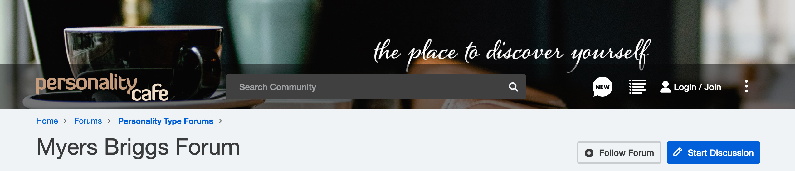
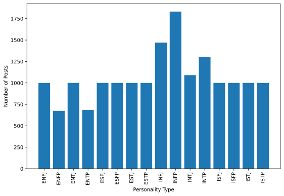

What's missing?
Identifying the personalities.
Improve Leadership Efficiency by Identifying Personality Types

What is MBTI?

→

←


A Tool to Predict One's Myers-Briggs Type
Hi, everyone! I’m a San Francisco native who attended Caltech in Pasadena and has spent time all over the country. My favorite cities are San Francisco, Boston, Raleigh, and Denver. I am a bootcamp veteran, having acquired a skill set in web development, and where I, amazingly, met Josh Shaman who now works for Metis. I bike, play piano, and dance in my spare time.
→ ????
Findng an MBTI dataset



Processing the data for NLTK:
- Remove special characters
- Remove single-letter words
- Convert to lower case
- Lemmatize
- Stop words
- Term frequency-inverse document frequency
Create a baseline.

Undersample or Oversample?
Sets the maximum number of data points per class to 500
1
2
3
Oversampling:
- to 500 data points
- to 1000 data points
- to 1500 data points
New distribution plot for final settings


Thinking...
Thinking...
Thinking...
Wow. You're really making me work for this.
Okay. I have your answer.
I predict that you are an

Take aways:
- Text processing models work better with larger bodies of text.
- Introverts either like to post more than extroverts, they are more curious about themselves, or they would rather connect with others anonymously.
Next steps:
- Topic modeling
- spaCy